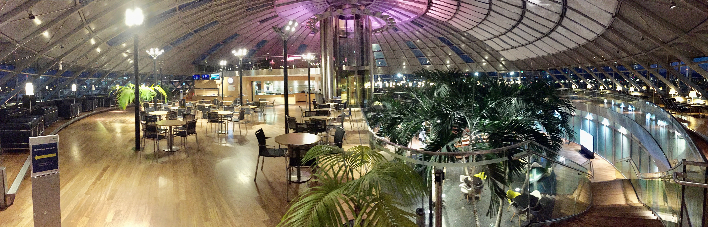

SKYVIEW LOUNGE ( SKYVIEW )
A floor area of 1,700 square metres across three levels makes the time before your departure or during transit particularly enjoyable. The size, structure and exclusive atmosphere of this lounge on the departure side in the departure section of the Y terminal sets new standards. The vast glass dome brings brightness to the interior and, together with the luxurious furnishing, creates an unusual and relaxing atmosphere.
The Skyview Lounge offers free WLAN (Wireless Local Area Network) access as well as fixed computer terminals, shower facilities. A designated smoking terrace with breathtaking views of the Tarmac is available. The Business Level with 200 seats offers a self-service bar with complimentary and well assorted snacks and drinks, TV screens, magazines and a relax area.
Access are granted to our contracted partners. However the traveling public can also buy a lounge voucher at the Reception Desk. Based on availability, restrictions may apply!
OPENING HOURS:
Mondays through Fridays and Sundays from 5:00 a.m. to 8:45 p.m;
Saturdays from 5:00 a.m. to 7:00 p.m.
In addition to the items listed abobve, we do offer a wide range of services. For more information, please contact the Welcome Desk